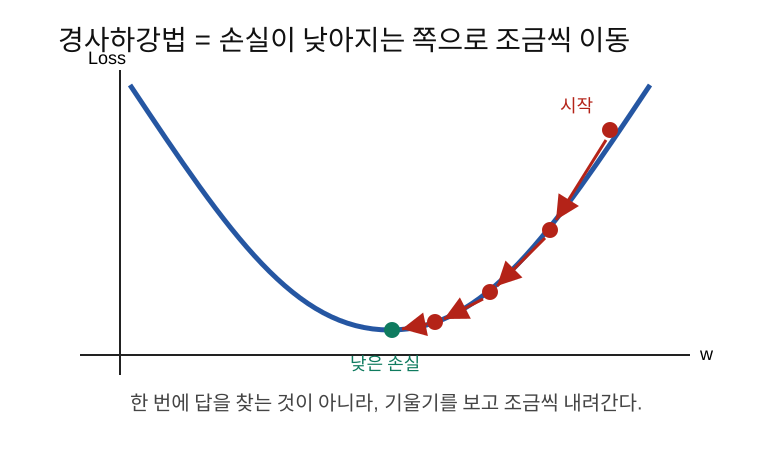
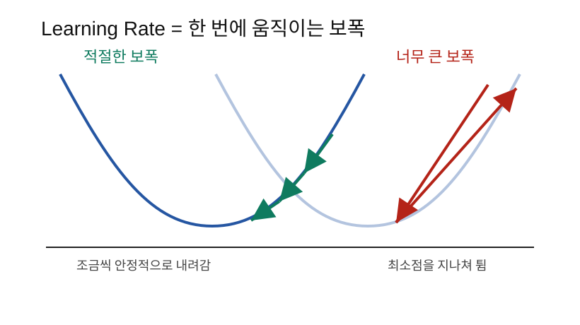
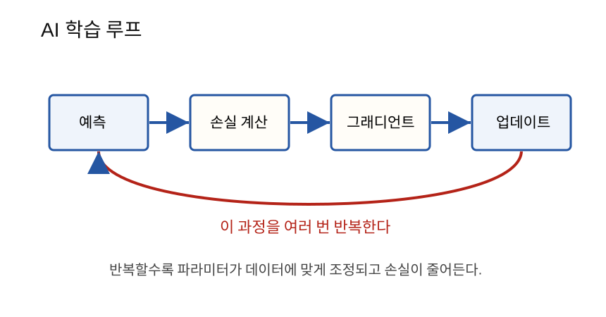

경사하강법은 그래디언트의 반대 방향으로 파라미터를 조금씩 움직여 손실을 줄이는 학습 방법이다.
6단계에서 그래디언트는 손실이 가장 빨리 증가하는 방향이라고 했다.
그래디언트 방향 = 손실이 커지는 방향AI는 손실을 줄이고 싶다. 그래서 그래디언트 방향으로 가지 않고, 그 반대 방향으로 움직인다.
학습 방향 = 그래디언트의 반대 방향이것이 경사하강법이다.

손실함수를 산의 높이라고 생각해 보자.
눈을 감고 산을 내려간다고 하자. 주변을 살펴보니 오른쪽이 오르막이고 왼쪽이 내리막이면 왼쪽으로 조금 움직인다.
AI도 비슷하다.
현재 파라미터에서 손실의 기울기를 본다.
손실이 커지는 방향을 찾는다.
그 반대 방향으로 조금 움직인다.경사하강법의 핵심 식은 다음과 같다.
w_new = w_old - learning_rate * dL/dw각 기호의 의미는 다음과 같다.
| 기호 | 뜻 |
|---|---|
w_old |
현재 가중치 |
w_new |
업데이트 후 가중치 |
learning_rate |
한 번에 움직이는 크기 |
dL/dw |
손실이 w에 대해 얼마나 민감한지 |
-가 붙는 이유는 그래디언트의 반대 방향으로 가기
위해서다.
learning rate는 한 번에 얼마나 움직일지 정하는 숫자다.
learning_rate = 보폭보폭이 너무 작으면 천천히 내려간다.
장점: 안정적이다.
단점: 오래 걸린다.보폭이 너무 크면 최소점을 지나쳐 튈 수 있다.
장점: 빠르게 움직인다.
단점: 불안정하고 발산할 수 있다.
모델이 다음과 같다고 하자.
y_hat = wx + b
L = (y_hat - y)^2값은 다음과 같다.
x = 2
y = 10
w = 3
b = 1
learning_rate = 0.1예측값:
y_hat = 3*2 + 1 = 7손실:
L = (7 - 10)^2 = 96단계에서 계산한 그래디언트는 다음과 같았다.
∂L/∂w = -12
∂L/∂b = -6업데이트:
w_new = 3 - 0.1*(-12) = 4.2
b_new = 1 - 0.1*(-6) = 1.6새 예측값:
y_hat_new = 4.2*2 + 1.6 = 10새 손실:
L_new = (10 - 10)^2 = 0이 예제에서는 한 번에 정답에 도착했다. 실제 데이터에서는 보통 여러 번 반복해야 한다.
AI 학습은 다음 루프를 반복한다.

1. 예측한다.
2. 손실을 계산한다.
3. 그래디언트를 계산한다.
4. 파라미터를 업데이트한다.
5. 다시 예측한다.이 반복을 많이 하면 파라미터가 점점 데이터에 맞게 바뀐다.
학습 로그를 보면 epoch, step이라는 말을
자주 본다.
| 용어 | 뜻 |
|---|---|
| step | 파라미터를 한 번 업데이트한 것 |
| batch | 한 번에 계산하는 데이터 묶음 |
| epoch | 전체 학습 데이터를 한 바퀴 사용한 것 |
예를 들어 데이터가 1000개이고 batch size가 100이면,
1 epoch = 10 steps왜냐하면 100개씩 10번 보면 전체 1000개를 한 번 다 본 것이기 때문이다.
전체 데이터를 한꺼번에 사용해 그래디언트를 계산하는 방법이다.
전체 데이터 -> 손실 평균 -> 그래디언트 -> 업데이트장점:
단점:
SGD는 데이터 일부만 보고 업데이트하는 방법이다.
엄밀히는 데이터 1개만 쓰는 것이 stochastic gradient descent이고, 실무에서는 작은 batch를 쓰는 mini-batch SGD를 흔히 SGD라고 부른다.
작은 batch -> 손실 -> 그래디언트 -> 업데이트장점:
단점:
이론적으로는 손실이 줄어드는 방향으로 움직인다. 하지만 실제 학습 로그에서는 손실이 매 step마다 항상 줄지는 않는다.
이유는 다음과 같다.
그래서 학습에서는 한두 step보다 전체 추세를 본다.
중요한 것은 매번 감소가 아니라, 전체적으로 내려가는 흐름이다.x = 2.0
y = 10.0
w = 3.0
b = 1.0
lr = 0.1
for step in range(3):
y_hat = w * x + b
loss = (y_hat - y) ** 2
dL_dyhat = 2 * (y_hat - y)
dL_dw = dL_dyhat * x
dL_db = dL_dyhat * 1
w = w - lr * dL_dw
b = b - lr * dL_db
print(step, y_hat, loss, w, b)import torch
x = torch.tensor(2.0)
y = torch.tensor(10.0)
w = torch.tensor(3.0, requires_grad=True)
b = torch.tensor(1.0, requires_grad=True)
lr = 0.1
for step in range(3):
y_hat = w * x + b
loss = (y_hat - y) ** 2
loss.backward()
with torch.no_grad():
w -= lr * w.grad
b -= lr * b.grad
w.grad.zero_()
b.grad.zero_()
print(step, float(loss), float(w), float(b))zero_()를 하는 이유는 PyTorch가 그래디언트를 기본적으로
누적하기 때문이다. 매 step마다 새 그래디언트로 업데이트하려면 이전
그래디언트를 지워야 한다.
| 헷갈리는 말 | 쉽게 풀어쓴 말 |
|---|---|
| 경사하강법 | 손실이 낮아지는 방향으로 파라미터를 조금씩 바꾸는 방법 |
| learning rate | 한 번에 움직이는 보폭 |
| step | 업데이트 1번 |
| epoch | 전체 데이터를 1번 다 보는 것 |
| batch | 한 번에 계산하는 데이터 묶음 |
| SGD | 일부 데이터만 보고 자주 업데이트하는 방법 |
| loss가 흔들림 | mini-batch 학습에서는 자연스러운 현상일 수 있음 |
grad.zero_()가 필요한 이유는 무엇인가?경사하강법은 그래디언트를 이용해 손실을 줄이는 기본 학습 방법이다.
핵심은 파라미터 = 파라미터 - learning_rate * gradient이다.
learning rate는 보폭이고, 너무 크면 불안정하며 너무 작으면 오래 걸린다.
실제 AI 학습은 예측, 손실 계산, 그래디언트 계산, 파라미터 업데이트를
반복하는 루프다.
다음 노트: 08_확률분포와Softmax